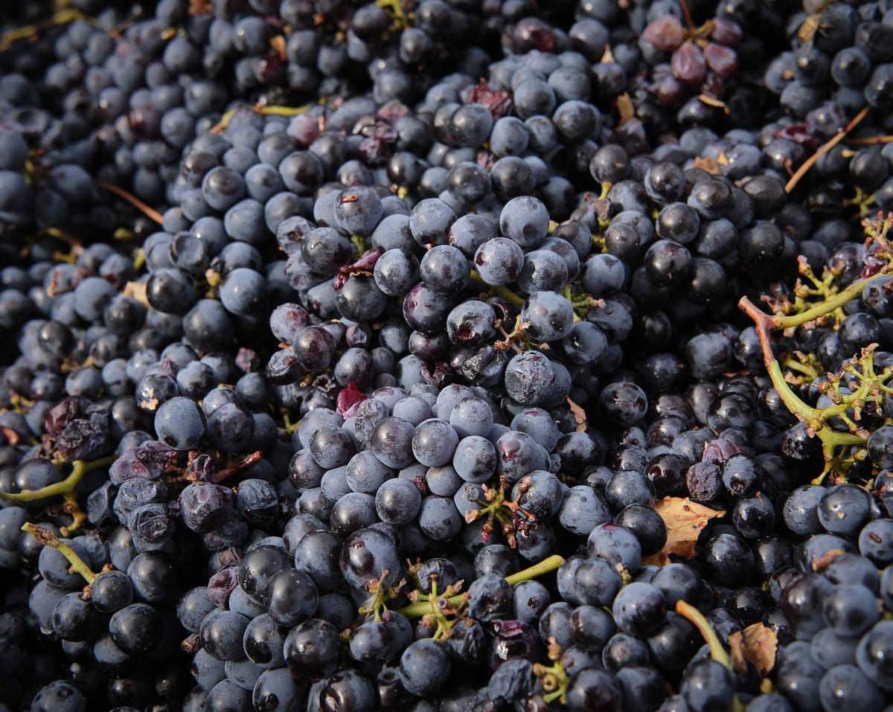
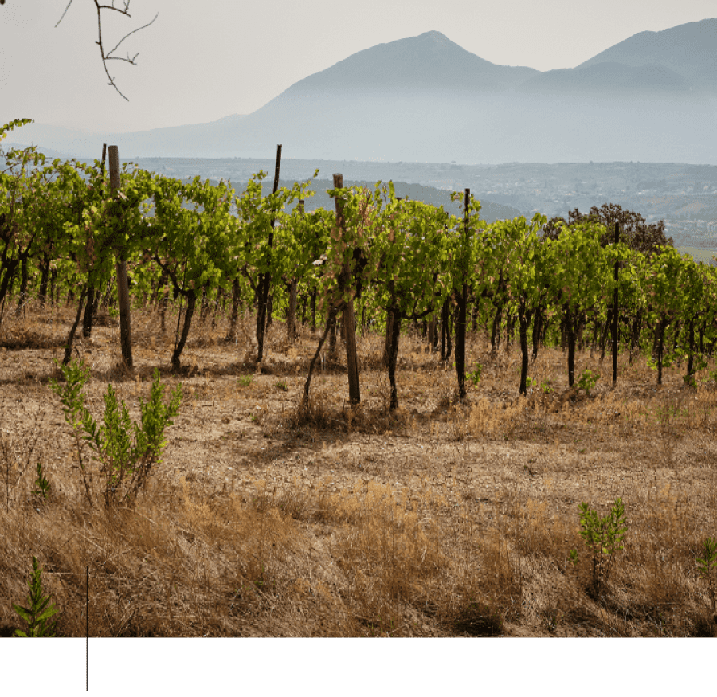
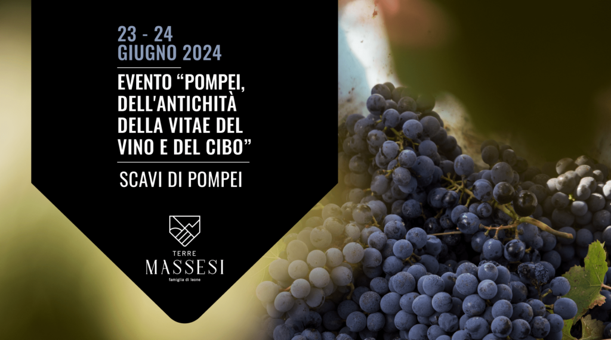

Domenica 23 e lunedì 24 giugno 2024 Terre Massesi parteciperà all’evento “Pompei, dell’Antichità della Vitae del Vino e del Cibo” che si terrà nella suggestiva location degli storici Scavi di Pompei. Sarà un’occasione speciale per conoscere Nevene, Lengualonga e Lucella, i nostri vini DOP che ti faranno vivere un’esperienza sensoriale unica. Potrai sentirne il profumo fruttato, provarne i sentori floreali, assaporarne il gusto autentico. Il vino è cultura, tradizione e vita.


I nostri vini incarnano un’esperienza sensoriale completa, dove ogni sorso risveglia antichi racconti di famiglia e trasporta chi lo assapora in un viaggio attraverso le nostre radici e la nostra cultura.

Domenica 23 e lunedì 24 giugno 2024 Terre Massesi parteciperà all’evento “Pompei, dell’Antichità della Vitae del Vino e del Cibo” che si terrà nella suggestiva location degli storici Scavi di Pompei. Sarà un’occasione speciale per conoscere Nevene, Lengualonga e Lucella, i nostri vini DOP che ti faranno vivere un’esperienza sensoriale unica. Potrai sentirne il profumo fruttato, provarne i sentori floreali, assaporarne il gusto autentico. Il vino è cultura, tradizione e vita.